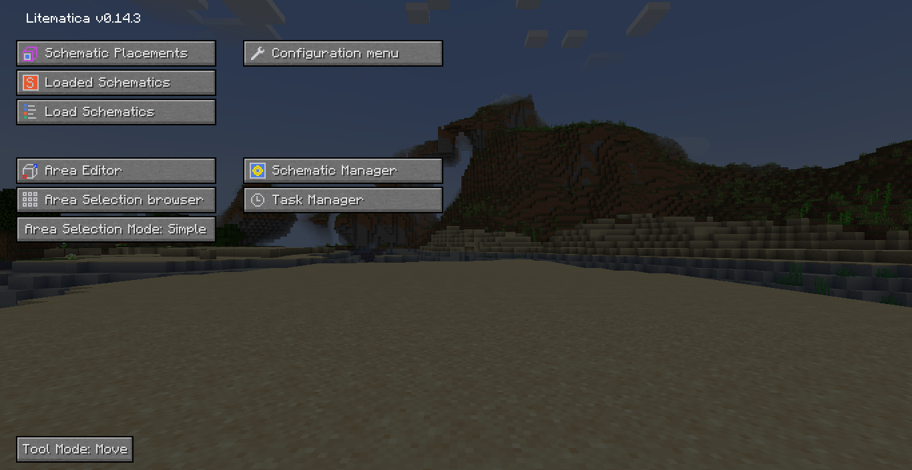
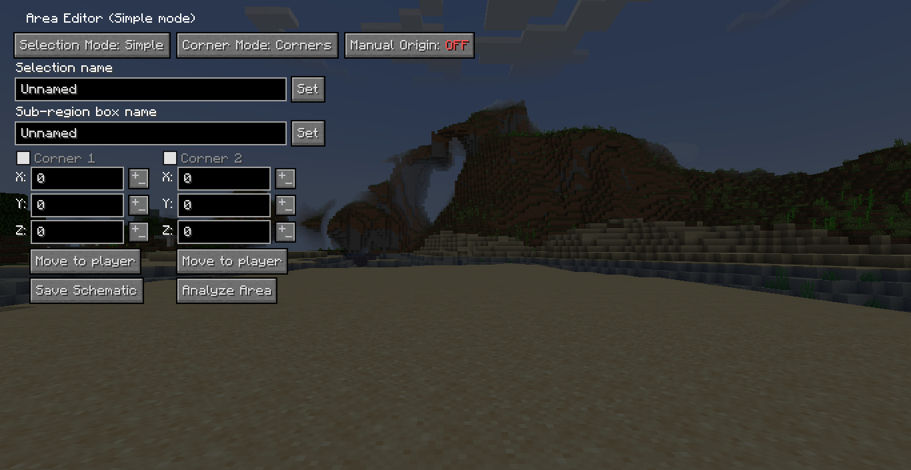
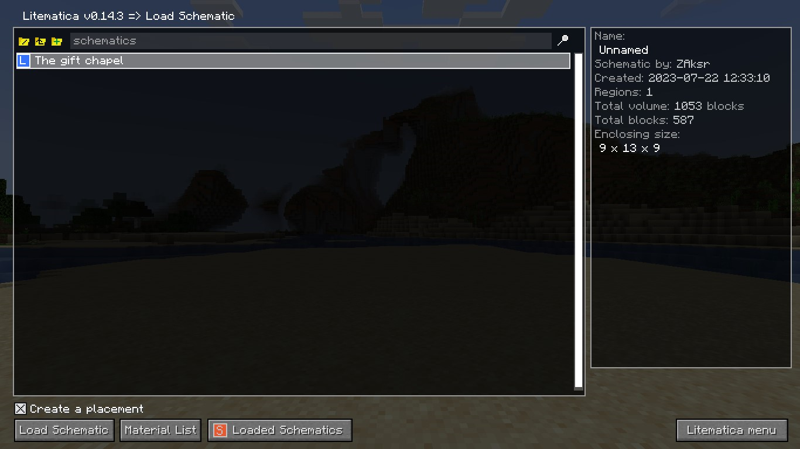
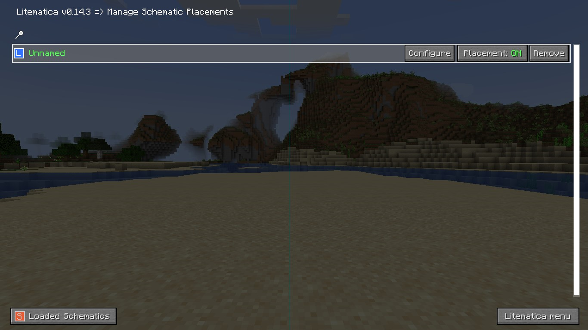
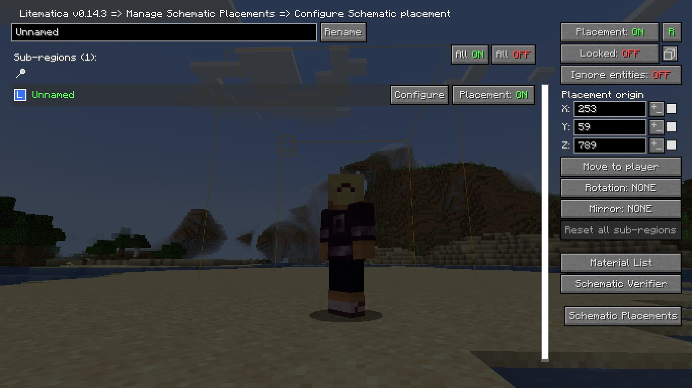
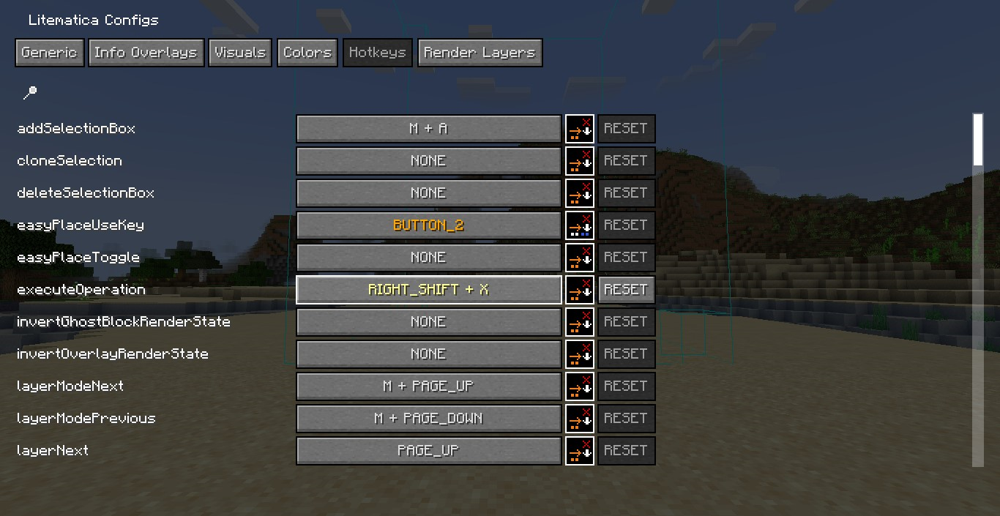

Гайд по Лайтматиці
Розділ 1: Встановлення
Для початку роботи з модом Лайтматика потрібно його завантажити. Зверни увагу, що окрім самого моду потрібно ще завантажити бібліотечний мод Маліліб.
Встановити мод не є проблемою. Для цього файли, які ти щойно завантажив потрібно вставити у папку mods, що знаходить у папці minecraft. Далі потрібно встановити fabric.
Якщо ти використовуєш не офіційний лаунчер майнкрафт, то просто вибери серед списку версій ту, що містить у своїй назві Fabric (приклад: Fabric 1.19.4). Також ти можеш використати версію FabricSodium, якщо у тебе слабкий комп’ютер, бо Sodium є аналогом Optifine. Тепер просто натисни кнопку «Грати» і програма все зробить за тебе.
Якщо ж ти використовуєш офіційний лаунчер, то буде трохи важче. Переходимо за цим посиланням: fabricmc.net/use та завантажуємо мод. Далі, не важливо де, відкриваємо файл та, за бажанням вибираємо, певні налаштування і натискаємо кнопку «Встановити».
Отже, ти встановив мод і вже запустив гру. Чудово! Тепер зайди у будь-який світ або на сервер. Але для навчання рекомендую створити новий світ з творчим режимом гри.
Якщо ти все зробив правильно, то при натисканні на клавіатурі англійської кнопки M має відкриватися таке меню:
Далі ти можеш створити свою власну схематику за допомогою вкладки «Area Editor» (Розділ 2) або використати якусь з тих, що розміщені на моємі сайті (Розділ 3).
Розділ 2: Створення першої схематики
Для цього необхідно вибрати крайні точки будівлі, яку ти хочеш зберегти, по діагоналі й ввести їх координати у поля «Corner 1» і «Corner 2». Далі просто натисни зберегти (Save schematics) і дай назву схематиці. Тепер створена схематика буде зберігатися у папці schematics. Приблизно тут:
C: > User > AppDate* > Roaming > .minecraft > schematics
*Папка AppDate схована і для того щоб її знайти необхідно ввімкнути відображення прихованих об’єктів.
Якщо ж на цій же вкладці після вибору крайніх точок натиснути кнопку Analyze Area, то мод покаже тобі список блоків, що є у вибраній області. Ти можеш зберегти ций список натиснувши кнопку «Write to file», список з’явиться у чаті, як скріншот, і його треба буде зберегти вручну.
Розділ 3: Додавання сторонніх схематик
Розглянемо на прикладі однієї зі схематик на моєму сайті. Для початку завантаж файл натиснувши на пункт «Схематика будівлі». Далі відкрий папку schematics (як її знайти написано трохи вище). Тепер перемісти файл, який ти щойно завантажив у папку schematics.
Розділ 4: Додавання схематики у світ
Повертайся в гру й у меню лайтматики заходь на вкладку «Load schematics». Там буде збережена/завантажена тобою схематика.
Вибери потрібну схематику та натисни кнопку «Load Schematic». Також ти одразу можеш подивитися список матеріалів та, якщо ти в режимі виживання, мод покаже, які з необхідних блоків вже є у тебе в інвентарі.
Розділ 5: Налаштування схематики
Якщо зайдеш на вкладку «Loaded Schematics» ти побачиш або завантажену тобою схематику або вибрану за допомогою «Area Editor». На цій вкладці ти можеш видалити схематику зі світу (Unload), перезавантажити її (Reload), зберегти вибрану місцевість (як на вкладці Area Editor) та створити ‘розміщення’, якщо ти не створив його на вкладці «Load schematics» (галочка над кнопкою завантаження схематики).
Далі пропоную перейти до значно більш корисної вкладки «Schematic Placement».
Перемикач «Placement» дозволяє показувати/приховувати розміщення схематики. Також розміщення можна видалити за допомогою кнопки «Remove».
Якщо ж натиснути на кнопку «Configure» відкриється меню налаштування розміщення схематики.
«Placement origin» дозволяє рухати схематику по координатам (ПКМ - збільшити коорданату на 1, ЛКМ - зменшити координату на 1).
«Move to player» переміщає схематику до гравця.
«Rotation» - розвертання схематики на 90 градусів.
«Mirror» - ‘відбити’ схематику.
Розділ 6: Як вставити схематику у світ
Для цього необхідно у творчому режимі гри зайти в меню лайтматики і зліва знизу вибрати «Tool Mode: Paste schematics in the world». Далі зайти в «Configuration menu» -> «Hotkeys». Тепер знайти в списку «executeOperation» та вибери для цього значення комбінацію клавіш, тільки необхідно придумати комбінацію, яка не використовується. Все що залишається зробити це взяти звичайну палицю в руку натиснути вибрану комбінацію клавіш (тільки перед цим вибери й встав схематику у світ Load schematics).
Кольори блоків у схемі
Блакитний: Не поставлені блоки
Рожевий: Зайві
Помаранчевий: Неправильне положення (сходів, напівблоків, редстоуну тощо)
Червоний: Помилкові блоки. Для перегляду інформації про помилку можна натиснути «І», дивлячись на необхідний блок.